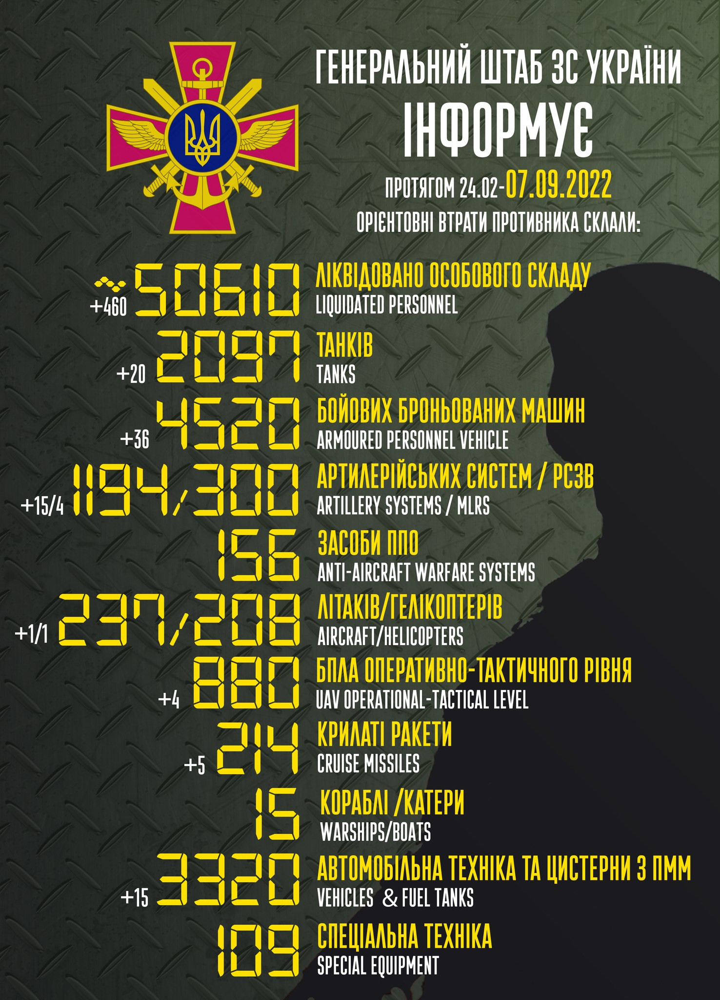

Втрати ворога станом на 7 вересня
Генеральний штаб Збройних сил України назвав орієнтовні втрати ворога від початку військової агресії рф на Україні станом на ранок 7 вересня.
Триває 196 доба захисту України від російських загарбників і наші захисники продовжують давати відсіч ворогу.
Триває 196 доба захисту України від російських загарбників і наші захисники продовжують давати відсіч ворогу.
Загальні бойові втрати противника з 24 лютого по 7 вересня 2022 року
-
особового складу – близько 50610
- 460 за добу
-
танків ‒ 2097
- 20 за добу
-
бойових броньованих машин ‒ 4520
- 36 за добу
-
артилерійських систем – 1194
- 15 за добу
-
РСЗВ – 300
- 4 за добу
-
засоби ППО – 156
- 0 за добу
-
літаків – 237
- 1 за добу
-
гелікоптерів – 208
- 1 за добу
-
БПЛА оперативно-тактичного рівня – 880
- 4 за добу
-
крилаті ракети – 214
- 5 за добу
-
кораблі /катери – 15
- 0 за добу
-
автомобільної техніки та автоцистерн – 3320
- 15 за добу
-
спеціальна техніка – 109
- 0 за добу
Бойові втрати противника за добу з 6 по 7 вересня 2022 року
- особового складу - 460
- танків - 20
- бойових броньованих машин - 36
- артилерійських систем - 15
- РСЗВ - 4
- засоби ППО - 0
- літаків - 1
- гелікоптерів – 1
- БПЛА оперативно-тактичного рівня – 4
- крилаті ракети – 5
- кораблі /катери – 0
- автомобільної техніки та автоцистерн – 15
- спеціальна техніка – 0
Найбільших втрат противник зазнав на Донецькому напрямку

Нагадаємо, через повномасштабну війну рф в Україні загинуло 5237 цивільних, зокрема, від початку війни російські окупанти вбили в Україні щонайменше 382 дитини.
Також відомо, що росія незаконно вивезла з України вже понад 238 тис. дітей .